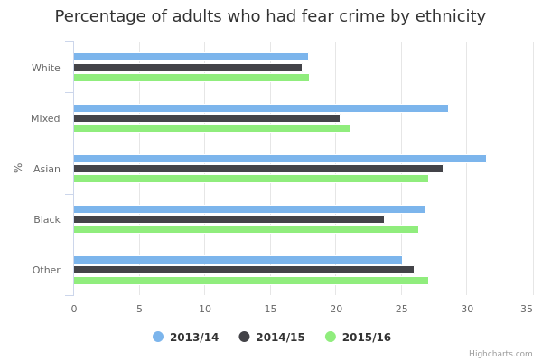
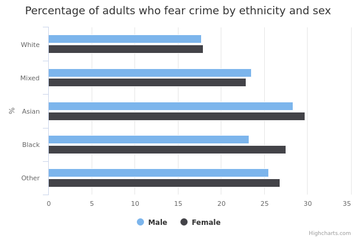
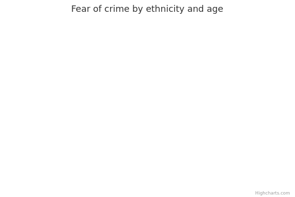

Fear of crime
The main facts and figures show that:
-
in 2015/16, around a fifth of adults in England and Wales believed that they were either ‘very likely’ or ‘fairly likely’ to be a victim of crime in the next year
-
the figures for fear of crime have remained consistent between 2013 and 2016
-
in 2015/16, a smaller proportion of White adults reported fear of crime compared with Asian adults, adults from Other ethnicities and Black adults
-
Asian adults and adults from the Other ethnic background category had the highest levels of fear of crime, but this has decreased since 2013/14
Things you need to know
These figures are based on the Crime Survey for England and Wales (CSEW).
The CSEW is a face-to-face survey in which adults aged 16 or over living in England and Wales are asked about their experiences of a selected range of criminal offences in the 12 months prior to the interview.
The CSEW is able to capture a broad range of victim-based crimes experienced by those interviewed, not just those that have been reported to, and recorded by, the police. However, there are some high harm but relatively lower-volume offences, such as homicide and sexual offences, which are not included in its main estimates.
Since October 2015, the survey has included fraud and computer misuse. However, as data from before this point is not available, the statistics and commentary presented here exclude fraud and computer misuse offences.
Estimates based on a larger number of respondents are generally more reliable. Therefore, the smaller numbers of respondents from ethnic minority backgrounds mean that estimates for these groups are less reliable than estimates for White people.
Estimates based on fewer than 50 responses are excluded, as they are considered less reliable.
In some instances, 3 years' worth of CSEW data have been combined. This allows us to increase the numbers of respondents and increase the reliability of the data, providing more detailed breakdowns.
CSEW is a sample survey and produces estimates with a margin of error around them, so users should consider this when interpreting data.
What the data measures
This data measures the proportion of the population who have a fear of crime and is based on information from the Crime Survey for England and Wales (CSEW).
Both victims and non-victims of crime were asked ‘How likely do you think you personally are to be a victim of crime in the next year?’, and offered a choice of responses on a 4-point scale ranging from ‘very unlikely’ to ‘very likely’.
The survey classed people who answer ‘very likely’ or ‘fairly likely’ as having a fear of crime.
Why these ethnic categories were chosen
Where possible, this data includes the 18 ethnic categories listed in the 2011 Census, plus 'Unknown'.
White:
- English/ Welsh/ Scottish/ Northern Irish/ British
- Irish
- Gypsy, Traveller or Irish Traveller
- Any other White background
Mixed/Multiple ethnic groups:
- White and Black Caribbean
- White and Black African
- White and Asian
- Any other Mixed/ Multiple ethnic background
Asian/Asian British:
- Indian
- Pakistani
- Bangladeshi
- Chinese
- Any other Asian background
Black/African/Caribbean/Black British:
- African
- Caribbean
- Any other Black/African/Caribbean background
Other ethnic group:
- Arab
- Any other ethnic group
Unknown
However, in cases where the number of people surveyed (the ‘sample size’) was too small to draw any firm conclusions, the CSEW breaks the data down into the following broader categories.
Either 5 ethnic categories:
- White
- Mixed / Multiple ethnic groups
- Asian / Asian British
- Black / African / Caribbean / Black British
- Other ethnic group
Or 2 ethnic categories: White and Other, that is, White ethnic groups (including White British and White ethnic minorities) compared with all other ethnic minorities
Fear of crime by ethnicity

Percentage and number of adults who had a fear of crime by ethnicity
| 2013/14 | 2014/15 | 2015/16 | ||||
| All | 19 | 34,684 | 19 | 32,702 | 19 | 34,566 |
|---|---|---|---|---|---|---|
| Asian | 31 | 1,766 | 28 | 1,578 | 27 | 1,712 |
| Bangladeshi | 34 | 132 | 29 | 119 | 31 | 130 |
| Chinese | 15 | 165 | 19 | 131 | 16 | 166 |
| Indian | 33 | 744 | 29 | 642 | 27 | 694 |
| Pakistani | 35 | 388 | 27 | 375 | 30 | 400 |
| Any other asian | 29 | 337 | 30 | 311 | 26 | 322 |
| Black | 27 | 918 | 24 | 875 | 26 | 854 |
| Black african | 23 | 542 | 22 | 509 | 25 | 504 |
| Black caribbean | 32 | 331 | 26 | 309 | 28 | 292 |
| Any other black background | withheld because a small sample size makes it unreliable | 45 | 26 | 57 | 28 | 58 |
| Mixed | 29 | 329 | 20 | 303 | 21 | 359 |
| Mixed white and asian | 33 | 77 | 18 | 88 | 21 | 93 |
| Mixed white and black african | withheld because a small sample size makes it unreliable | 45 | withheld because a small sample size makes it unreliable | 45 | withheld because a small sample size makes it unreliable | 43 |
| Mixed white and black caribbean | 25 | 119 | 21 | 97 | 18 | 133 |
| Any other Mixed/Multiple ethnic background | 25 | 88 | 27 | 73 | 26 | 90 |
| White | 18 | 31,414 | 17 | 29,681 | 18 | 31,352 |
| White British | 18 | 29,565 | 17 | 27,990 | 18 | 29,458 |
| White Irish | 21 | 316 | 17 | 295 | 20 | 280 |
| Gypsy or Irish Traveller | withheld because a small sample size makes it unreliable | 12 | withheld because a small sample size makes it unreliable | 10 | withheld because a small sample size makes it unreliable | 15 |
| Any other white background | 20 | 1,521 | 19 | 1,386 | 21 | 1,599 |
| Other | 25 | 229 | 26 | 223 | 27 | 235 |
| Arab | 21 | 86 | 25 | 79 | 30 | 84 |
| Any other ethnic group | 27 | 143 | 26 | 144 | 25 | 151 |
Summary
This data shows that:
-
in 2015/16, almost a third of Bangladeshi adults expressed a fear of crime, a higher proportion than that of adults in the White British, White Irish, Other White, Mixed White and Black Caribbean, or Chinese ethnic groups. Sample sizes are too small to draw firm conclusions for the remaining ethnic groups
-
White British adults reported a lower fear of crime than all Asian and Black groups except for Chinese people
-
only the Indian ethnic group saw a change in levels of fear of crime, with the proportion expressing fear falling from 33% in 2013/14 to 27% in 2015/16. Although survey estimates show differences in the levels of fear of crime over time for various ethnic groups in this sample, these are not reliable enough to draw any conclusions, about differences within these groups.
Download image and data
Fear of crime by ethnicity and gender

Percentage and number of adults who had a fear of crime by ethnicity and gender
| All | Male | Female | ||||
| Asian | 29 | 5,056 | 28 | 2,528 | 30 | 2,528 |
|---|---|---|---|---|---|---|
| Black | 26 | 2,647 | 23 | 1,118 | 28 | 1,529 |
| Mixed | 23 | 991 | 23 | 411 | 23 | 580 |
| White | 18 | 92,447 | 18 | 42,015 | 18 | 50,432 |
| Other | 26 | 687 | 26 | 360 | 27 | 327 |
Summary
When the figures for the last 3 years are combined, this data shows that:
-
men and women within the White, Mixed, Asian and Other ethnic groups shared a similar fear of crime
-
among Black people, men feared crime less than women
-
both White men and White women were less likely to fear crime than men and women from Black, Mixed, Asian or Other ethnic groups
Download image and data
Fear of crime by ethnicity and age

Percentage and number of adults who had a fear of crime by ethnicity and age
| Asian | Black | Mixed | White | Other | ||||||
| 16-24 | 24 | 563 | 20 | 282 | 23 | 207 | 18 | 6,470 | 20 | 85 |
|---|---|---|---|---|---|---|---|---|---|---|
| 25-34 | 28 | 1,327 | 24 | 518 | 20 | 250 | 20 | 12,492 | 25 | 172 |
| 35-44 | 31 | 1,414 | 25 | 698 | 25 | 221 | 22 | 13,988 | 31 | 189 |
| 45-54 | 31 | 775 | 32 | 598 | 26 | 156 | 20 | 15,879 | 30 | 109 |
| 55-64 | 35 | 513 | 28 | 271 | 29 | 70 | 19 | 15,444 | 24 | 63 |
| 65-74 | 28 | 329 | 34 | 152 | 21 | 61 | 15 | 15,539 | withheld because a small sample size makes it unreliable | 41 |
| 75+ | 27 | 135 | 14 | 128 | withheld because a small sample size makes it unreliable | 26 | 9 | 12,635 | withheld because a small sample size makes it unreliable | 28 |
Summary
When the figures for the last 3 years are combined, this data shows that:
-
for the 16 to 24 age group there was no difference in fear of crime between White people and other ethnicities, with the exception of Asian and Mixed race people, who were more likely to fear crime
-
The biggest difference in fear of crime between different ethnic groups was found in the two oldest age groups
-
a third of Black people aged 65 to 74 expressed a fear of crime compared to almost a sixth of White people in that age group
-
among White people aged 75 and over, only 9% feared crime, compared to 27% of Asian people in the same age group
-
Asian people in all age groups were more likely to fear crime than White people
Download data
Fear of crime by ethnicity and socio-economic group
Percentage and number of adults who had a fear of crime by ethnicity and socio-economic status
| Asian | Black | Mixed | White | Other | ||||||
| Managerial and professional occupations | 28 | 1,618 | 26 | 778 | 21 | 332 | 17 | 31,910 | 28 | 195 |
|---|---|---|---|---|---|---|---|---|---|---|
| Intermediate occupations | 34 | 1,035 | 27 | 447 | 24 | 195 | 19 | 21,907 | 25 | 124 |
| Routine and manual occupations | 30 | 1,389 | 28 | 954 | 23 | 304 | 19 | 32,943 | 23 | 167 |
| Never worked and long-term unemployed | 26 | 556 | 19 | 226 | 30 | 55 | 20 | 2,758 | 34 | 97 |
| Full time students | 23 | 418 | 22 | 221 | 25 | 101 | 15 | 2,442 | 22 | 102 |
| Not classified | withheld because a small sample size makes it unreliable | 40 | withheld because a small sample size makes it unreliable | 21 | withheld because a small sample size makes it unreliable | 4 | 17 | 487 | withheld because a small sample size makes it unreliable | 2 |
Summary
When the figures for the last 3 years are combined, this data shows that:
-
adults in managerial and professional jobs were generally less fearful of crime than adults in other occupations
-
within the managerial and professional category, White people were less likely to fear crime than most other ethnicities
-
unemployed White adults were less fearful of crime than unemployed adults of Other ethnicity and unemployed Asian adults
Download data
Methodology and type of data
Type of data
Survey
Purpose of data source
The Crime Survey for England and Wales (CSEW) is a face-to-face survey in which people living in households in England and Wales are asked about their experiences of a selected range of criminal offences in the 12 months prior to the interview.
The CSEW is able to capture a broad range of victim-based crimes experienced by those interviewed, not just those that have been reported to, and recorded by, the police
Methodology
The data is all drawn from the Crime Survey for England and Wales (CSEW), which is a continuous survey, and broken down by ethnic group, as reported by survey respondents.
CSEW estimates are based on analysis of structured face-to-face interviews carried out using computer-assisted personal interviewing (CAPI). Data is weighted and two stages are used in the weighting of the CSEW sample. In 2015/16, the response rate was 72%.
The CSEW is a household sample survey and, as such, estimates are based on a representative sample of the population of England and Wales aged 16 and over. A sample, as used in the CSEW, is a small-scale representation of the population from which it is drawn.
The CSEW collects information from approximately 35,000 households each year. Since those responses reflect only a fraction of the total population of England and Wales, a procedure is used to give different weights to different households and individuals based on their sex / age / region composition in such a way that the weighted distribution of responding household and individuals in these households matches the known distribution in the population as a whole.
First, weights are applied to the raw data to compensate for unequal address selection probabilities (given, some areas are more populated than others), to compensate for the observed variation in response rates between different types of neighbourhood, to compensate for situations in which only one dwelling unit can be selected in multiple ‘dwelling unit' households and to account for different probabilities of a respondent being selected based on different sized households.
Second, calibration weighting is used to make adjustments for known differentials in response rates between different regions and between different age by six sub-groups.
Rounding
Estimates in the charts and tables are given to the nearest whole number but more detailed estimates to 1 decimal place are available in the download
Further technical information
Accuracy: Since the Crime Survey for England and Wales (CSEW) is based on a sample of the population, estimates have a margin of quantifiable and non-quantifiable error associated with them. Non-quantifiable error includes:
- when respondents have recalled crimes in the reference period that actually occurred outside that period
- crimes that did occur in the reference period that were not mentioned at all (either because respondents failed to recall a fairly trivial incident or, conversely, because they did not want to disclose an incident, such as a domestic assault)
- respondents saying they reported crimes to police when they did not (a 'socially desirable' response)
- some incidents reported during the interview being miscoded ('interviewer or coder error')
Coverage issues: The CSEW does not cover those living in communal establishments (such as care homes, student halls of residence and prisons), or crimes against commercial or public sector bodies.
Data source details
Source
Crime Survey for England and Wales
Department
Home Office
Publication frequency
Annual
Disclosure control
Estimates from the Crime Survey for England and Wales have National Statistics status.
National Statistics are a subset of official statistics which have been certified by the UK Statistics Authority as compliant with its Code of Practice for Official Statistics, including requirements on disclosure control. Estimates based on a number of respondents (known as the 'unweighted base') that is less than 50 are suppressed as these estimates are deemed to be less reliable.
Download the data
fear-of-crime.csv
This file contains the following: ethnicity, year, geography, gender, socio-economic status, value, denominator
View this page as JSON